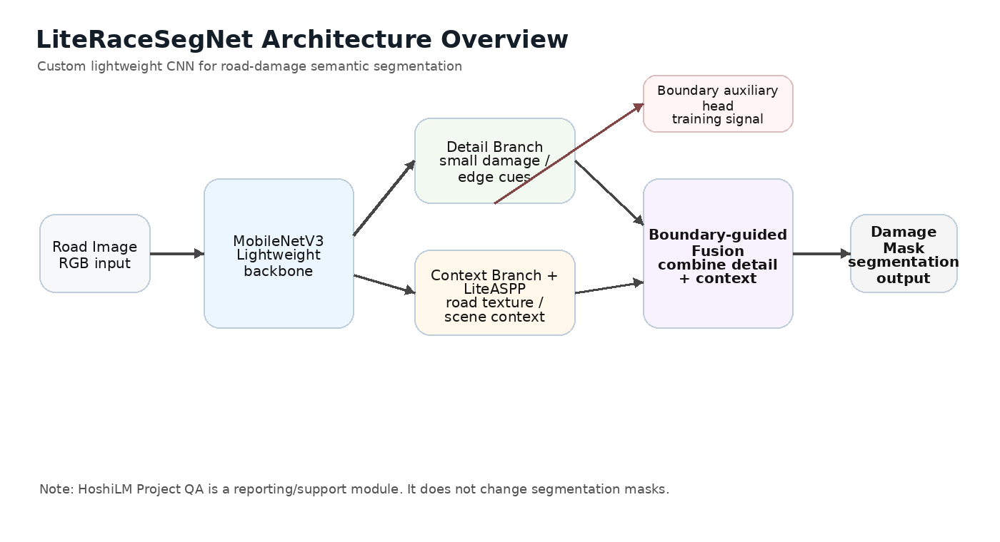
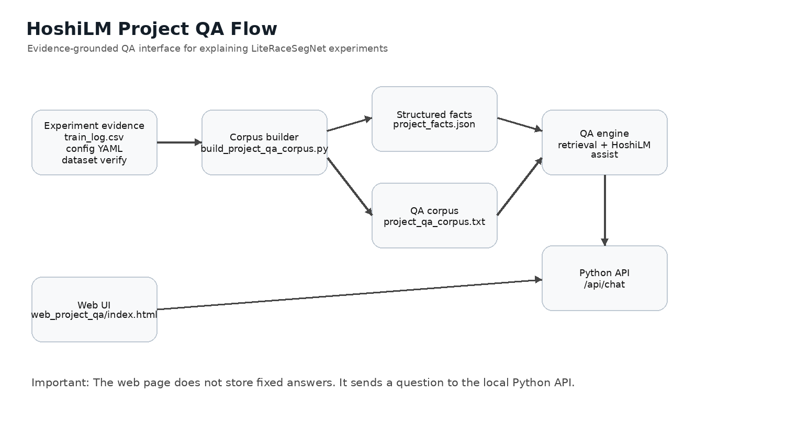
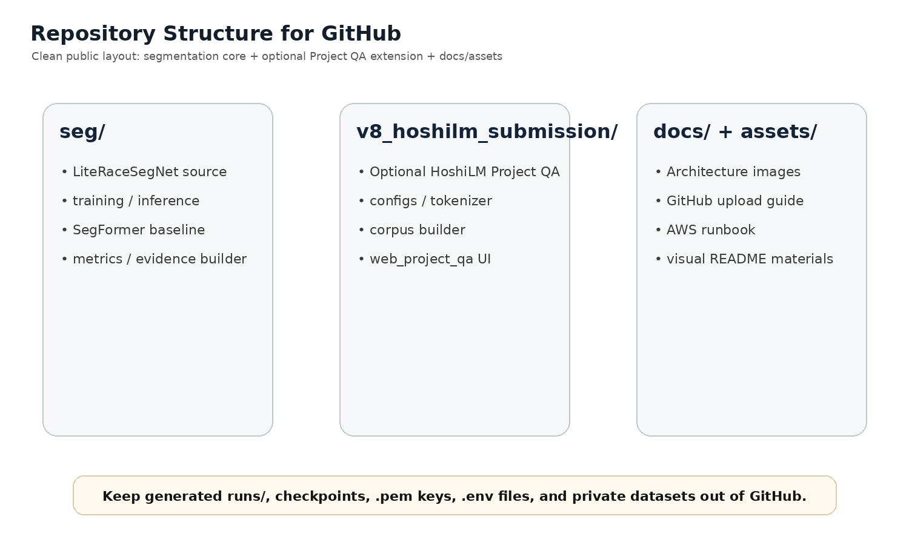

v7 Workstation Demo
Existing professor-preview page. Upload and server transmission are disabled; it shows a built-in static sample for UI review.
Open external demoKept as the stable public prototype preview.
LiteRaceSegNet is the lightweight CNN segmentation prototype. HoshiLM Project QA is a separate reporting/support interface that explains experiment evidence. This page connects the v7 workstation demo, v9/v10 static prototype, and Project QA preview in one place.

Existing professor-preview page. Upload and server transmission are disabled; it shows a built-in static sample for UI review.
Open external demoKept as the stable public prototype preview.
Internal static prototype included in this repository. Useful for showing repository-contained demo assets.
Open repo demoRuns directly on GitHub Pages as a static page.
Project QA interface for evidence-grounded experiment reporting. Live answers require the local/AWS Python API.
Open QA previewGitHub Pages shows the UI preview; `/api/chat` needs Python.

